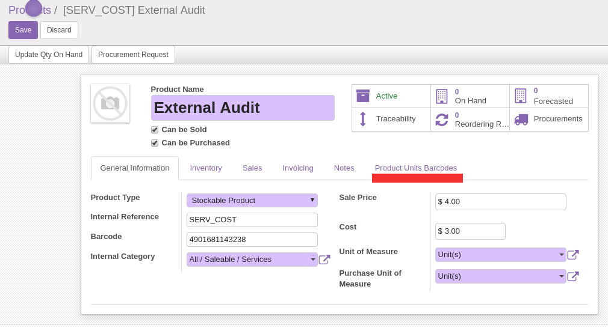
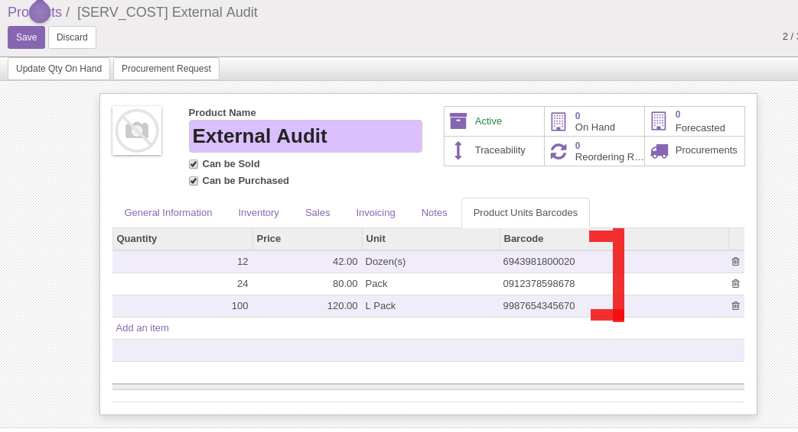
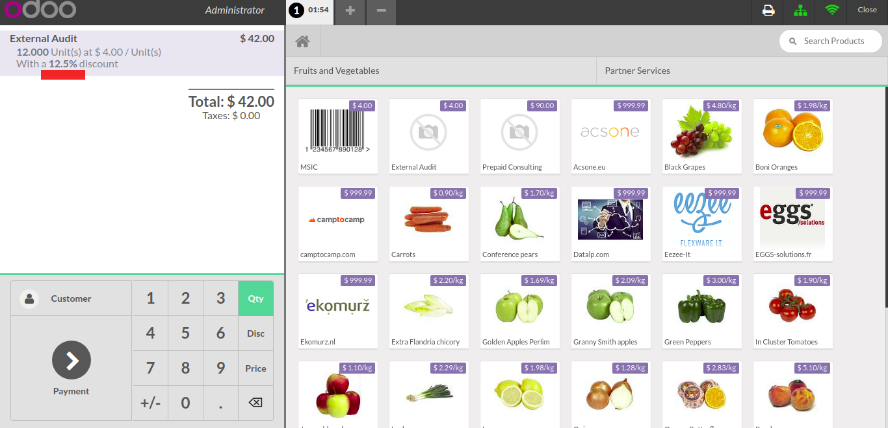

<section class="oe_container">
    <div>
        <div class="text-center">
            <a target="new" href="https://www.facebook.com/Microsoft.abdo">
                
            </a>
        </div>
    </div>
</section>
<br/>
<section class="oe_container oe_dark">
    <div class="oe_row oe_spaced">
        <div class="oe_span12">
            <h2 class="oe_slogan">Multi barcodes on a product (Odoo 10 Community)</h2>
            <h3 class="oe_slogan">This module allows you to assign multi barcodes on product and make an automatic discount in POS interface, also make a sound when the scanned product doesn't exist.</h3>
            <br/>
            <div class="oe_screenshot" style="text-align: left;">
	            <br/><br/>
                <br/><br/>
	            <br/><br/>
            </div>
        </div>
    </div>
</section>

<section class="oe_container oe_dark">
    <div class="oe_row">
        <div class="oe_span12 oe_centeralign">
            <br/>
            <h3>Contact me for support, query, customization</h3>
            <br/>
                Email : <a href="mailto:abdelmalik19930@gmail.com" subject="POS Extension Module">Email Support</a><br/>
                Skype : Abdelmalik Yousif<br/>
                Facebook : <a target="new" href="https://www.facebook.com/Microsoft.abdo">Facebook</a><br/>
            <br/>
        </div>
    </div>
</section>